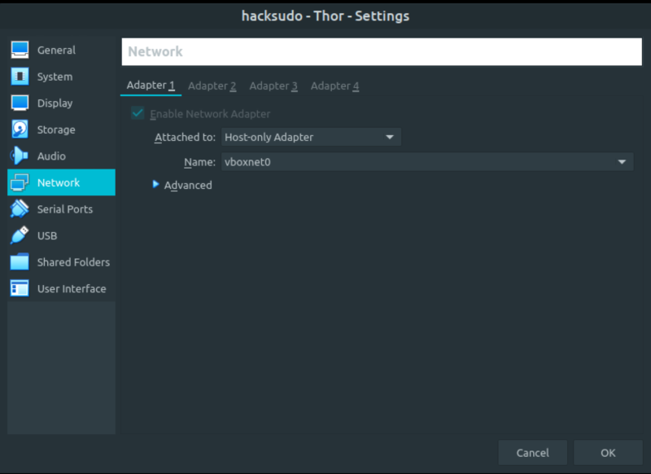

Hacksudo Thor
▸ Hacksudo Thor
▸ 1. Scan Network
▸ 2. Finding Services and Ports
▸ 3. Enumerate
▸ 3.1 Webserver with Gobuster and dirb
▸ 4. Exploitation
▸ 4.1 Metasploit
▸ 4.4 Get user’s shell
▸ 5. Privilege Escalation (Catch the flag)
Difficulty: Easy.
Flag: 1 flag.
Learning:
• Reconnaissance
Scan Network
Find services
• Enumerate
Webserver with Gobuster
Files and directories with dirb
• Exploitation
Metasploit
Find user's priviliges with “sudo -l”
Upgrade to an Intelligent Shell
• Privilege Escalation
Start a “bash shell”
• Download (Mirror): https://download.vulnhub.com/hacksudo/hacksudo---Thor.zip
• Download (Torrent): https://download.vulnhub.com/hacksudo/hacksudo---Thor.zip.torrent
Install the machine on VirtualBox:
1. Download the file and extract it.
2. On Virtualbox choose File->Import Appliance.
3. Select the file “ova”.
4. Accept to import.


Watch your Machine IP.
$ ifconfig
Output:

Diagram